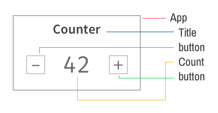
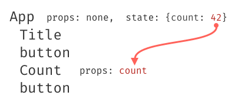
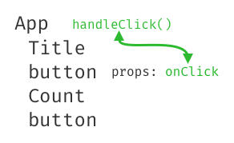
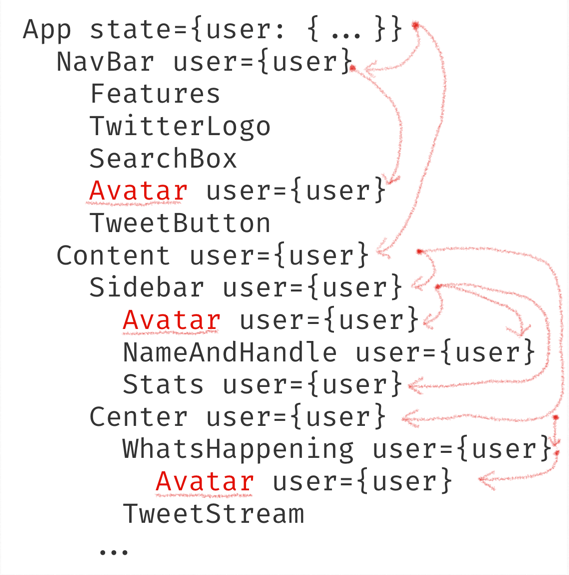
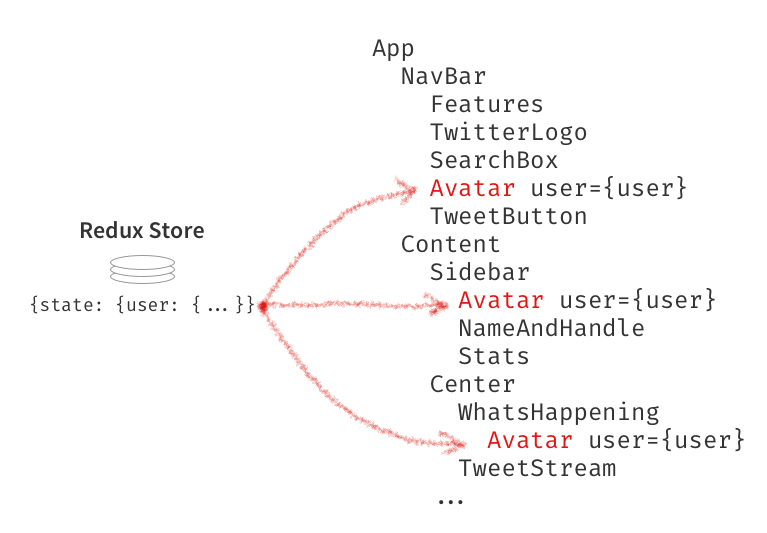
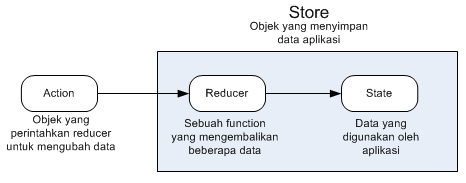
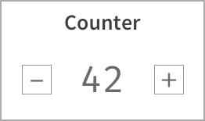
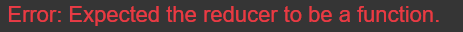

Terakhir diperbarui: 2021-03-22
Penulis: Habibie Ed Dien, S.Kom., M.T.
Pada codelab ini Anda akan mempelajari tentang penggunaan library Redux di ReactJS, apa itu Redux, kegunaannya, dan kapan waktu yang tepat untuk menggunakan Redux tersebut.
Sebelum memulai codelab ini, sebaiknya Anda memiliki pengetahuan dasar tentang:
Anda akan bingung tentang Redux jika membaca dari berbagai sumber di internet. Namun, dalam codelab ini akan disampaikan secara jelas kegunaan Redux dan kapan waktu yang tepat untuk memanfaatkan Redux dalam aplikasi kita.
Pertanyaan terbaik untuk memulai adalah dengan mengetahui alasannya mengapa kita harus menggunakan Redux ? dan jawabannya bukan karena semua orang atau developer menggunakan Redux juga.
Alasan utama menggunakan Redux adalah karena dapat menyelesaikan suatu masalah. Tapi, masalah apa itu sebenarnya ?
Masalahnya bukan karena "state management", karena React sendiri sudah menangani soal state. Redux membantu untuk menangani atau mengelola state, tetapi bukan masalah itu yang akan dihadapi. Mari kita lanjutkan dengan penjelasan berikut ini.
Pada codelab sebelumnya Anda telah mempelajari props dan aliran data searah. Data dikirim ke komponen melalui props. Sebagai contoh, perhatikan komponen berikut:

Variabel count disimpan dalam state aplikasi, kemudian dikirim melalui props untuk melakukan update nilai variabel tersebut.

Agar data dapat mengalir dari bawah ke atas (maksudnya dari variabel props menjadi state aplikasi), maka diperlukan callback function sehingga data dapat di-update atau manipulasi oleh sebuah komponen button seperti pada ilustrasi berikut.

Anda dapat mengimajinasikan data seperti komponen elektronik yang saling terhubung dengan kabel yang memiliki warna-warna berbeda. Data mengalir melalui kabel-kabel tersebut antar komponen yang bisa saling bertukar data antar komponen tersebut.
Cepat atau lambat Anda akan dihadapkan pada situasi di mana saat membuat aplikasi React membutuhkan lapisan data yang sama pada beberapa letak di halaman web. Perhatikan ilustrasi halaman web Twitter berikut yang menampilkan avatar (foto profil) pada 3 posisi berbeda, namun sumber datanya tetap sama.
Kita anggap avatar user merupakan bagian dari data profil user, yang disimpan dalam komponen App sebagai variabel user. Untuk mengirimkan data user ke tiga komponen avatar tersebut, data user perlu melewati beberapa komponen yang sebenarnya komponen-komponen tersebut tidak membutuhkannya. Perhatikan ilustrasi berikut ini.

Dari ilustrasi di atas, kita perhatikan data user melakukan perjalanan yang cukup rumit antar komponen-komponen yang berada dibawahnya. Model perancangan komponen seperti ini tidak baik untuk software design. Untuk melakukan refactoring dan reusing komponen cukup sulit jika berdasarkan ilustrasi tersebut. Karena setiap komponen memiliki state dan props-nya masing-masing.
Nah, itu merupakan salah satu masalah yang diselesaikan oleh Redux. Mari kita lanjutkan materi berikut ini.
Redux menyelesaikan masalah ini. Redux memberikan kemudahan untuk memasang data yang dibutuhkan ke komponen apapun secara langsung (direct access).
Menggunakan fungsi connect yang ada dalam Redux, Anda dapat mengaitkan dengan komponen ke dalam data store milik Redux. Komponen dapat menggunakan data yang diperlukan saja. Perhatikan ilustrasi berikut ini.

Itulah alasan menggunakan Redux.
Selain itu, Redux memiliki manfaat lain yaitu:
state yang terjadi.state sebelumnya) dan dapat dilihat data state sebelumnya seperti apa.Kemudahan memasang data ke berbagai komponen merupakan fungsi utama Redux, jika Anda tidak membutuhkan fitur tersebut, maka kemungkinan besar Anda tidak perlu untuk menggunakan Redux.
Beberapa kondisi yang perlu dipertimbangkan ketika akan menggunakan Redux adalah sebagai berikut.
props akan diteruskan ke berbagai komponen berbeda.state aplikasi, maka saat itu bisa menambahkan library Redux.Untuk memahami tentang konsep Redux, perhatikan diagram berikut:

Keterangan diagram:
reducer untuk memodifikasi data. Syaratnya, action harus memiliki properti type berupa String.state.reducer dan state aplikasi.Pada praktikum 1 ini, kita akan membuat program counter sederhana seperti pada gambar berikut ini.

Tampilan mungkin tidak semenarik pada gambar di atas, karena saat ini kita tidak fokus pada CSS-nya. Untuk membuat aplikasi tersebut, silakan lakukan langkah-langkah praktikum berikut ini.
npx create-react-app counter-appsrc/App.js. Hapus kode program dari praktikum sebelumnya dan buatlah sebuah komponen bernama Counterimport React from 'react';
class Counter extends React.Component {
state = { count: 0 }
increment = () => {
this.setState({
count: this.state.count + 1
});
}
decrement = () => {
this.setState({
count: this.state.count - 1
});
}
render () {
return (
<div>
<h2>Counter</h2>
<div>
<button onClick={this.decrement}>-</button>
<span>{this.state.count}</span>
<button onClick={this.increment}>+</button>
</div>
</div>
)
}
}App() di file src/App.js untuk diexport ke file index.jsexport default function App(){
return (
<div>
<Counter />
</div>
)
}src/index.js seperti kode berikut ini.import ReactDOM from 'react-dom';
import App from './App.js';
ReactDOM.render(
<App />,
document.getElementById('root')
);npm startSeperti yang telah dijelaskan pada materi sebelumnya bahwa Redux menyimpan state pada sebuah store. Kemudian Anda dapat mengambil state dari store untuk dikirim ke komponen melalui props. Store dapat diakses secara global pada aplikasi, sehingga memudahkan kita untuk menset data di halaman apapun pada aplikasi.
npm install redux react-redux --savePerintah di atas akan memasang 2 library, yaitu redux dan react-redux. Sintaks --save berfungsi untuk menambahkan dependencies ke package.json.
Apa bedanya redux dan react-redux ? redux menyediakan fitur store, yaitu untuk mengelola state saat dibutuhkan dan saat terjadi perubahan state. Sedangkan react-redux berfungsi untuk menghubungkan state ke komponen React. Sehingga bisa dikatakan library redux tidak mengetahui bagian-bagian dalam komponen React. Nah, redux dan react-redux bekerja sama untuk bisa mengelola state dan menyimpan di store.
state dari komponen Counter di file src/App.js, karena nanti akan digantikan oleh Redux. Kemudian ganti this.state.count dengan this.props.count karena nanti kita akan injeksi dengan redux. class Counter extends React.Component {
increment = () => {
// di isi nanti
}
decrement = () => {
// di isi nanti
}
render () {
return (
<div>
<h2>Counter</h2>
<div>
<button onClick={this.decrement}>-</button>
<span>{this.props.count}</span>
<button onClick={this.increment}>+</button>
</div>
</div>
)
}
}connect dengan import dari react-reduximport { connect } from 'react-redux';export default function App() kemudian ganti dengan kode berikut:function mapStateToProps (state) {
return {
count: state.count
};
}
export default connect(mapStateToProps)(Counter);src/index.js ubah menjadi kode berikut ini:import ReactDOM from 'react-dom';
import Counter from './App.js';
import { Provider } from 'react-redux';
const App = () => (
<Provider>
<Counter />
</Provider>
);
ReactDOM.render(
<App />,
document.getElementById('root')
);store dari redux, sehingga perlu import createStore dan menambahkan variabel store ke komponen Providerimport ReactDOM from 'react-dom';
import Counter from './App.js';
import { Provider } from 'react-redux';
import { createStore } from 'redux';
const store = createStore();
const App = () => (
<Provider store={store}>
<Counter />
</Provider>
);
ReactDOM.render(
<App />,
document.getElementById('root')
);
Artinya kita membutuhkan sebuah fungsi reducer. Fungsinya untuk menyimpan dan mengelola state.
reducer dengan nilai default count = 42import ReactDOM from 'react-dom';
import Counter from './App.js';
import { Provider } from 'react-redux';
import { createStore } from 'redux';
function reducer () {
return {
count: 42
};
}
const store = createStore(reducer);
const App = () => (
<Provider store={store}>
<Counter />
</Provider>
);
ReactDOM.render(
<App />,
document.getElementById('root')
);reducer belum melakukan manipulasi pada nilai count terhadap aksi yang dilakukan oleh button. Selanjutnya tambahkan variabel initialState dan ganti paramater serta isi fungsi reducer seperti berikut:const initialState = {
count: 0
};
function reducer(state = initialState, action) {
return state;
}reducer menjadi seperti kode berikut:function reducer(state = initialState, action) {
switch(action.type) {
case 'INCREMENT':
return {
count: state.count + 1
};
case 'DECREMENT':
return {
count: state.count - 1
};
default:
return state;
}
}src/App.js ubah isi fungsi increment dan decrement seperti kode berikut: increment = () => {
this.props.dispatch({ type: 'INCREMENT' });
}
decrement = () => {
this.props.dispatch({ type: 'DECREMENT' });
}Berdasarkan pada praktikum sebelumnya yang telah dilakukan, beberapa pertanyaan terkait praktikum perlu diselesaikan yaitu sebagai berikut.
this.props.dispatch pada praktikum langkah 16 sebelumnya!Actions
Reducers
Action creators
Middleware
Pure functions
Immutability
sintaks export default connect(mapStateToProps)(Counter) pada praktikum langkah 9 sebelumnya!Selamat, Anda telah berhasil menyelesaikan codelab ini. Semoga mendapatkan ilmu yang bermanfaat.
Silakan cek beberapa sumber belajar lainnya...